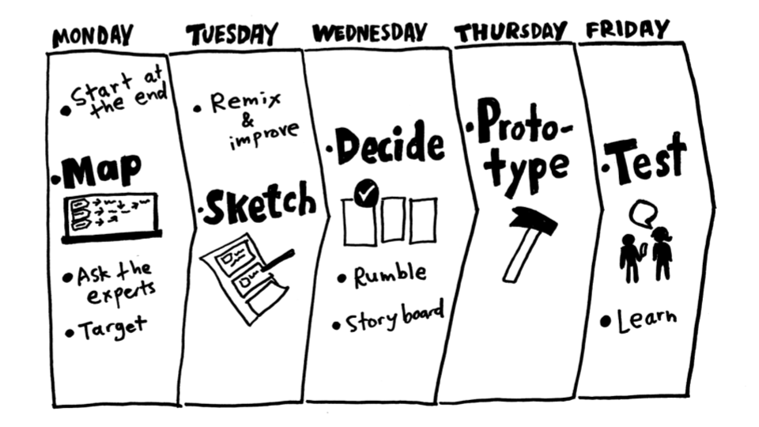
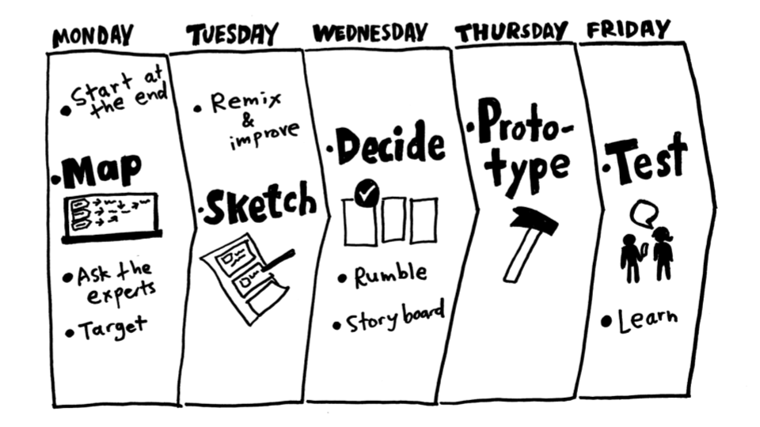

SPRINT
The sprint is a five-day process for answering critical business questions through design, prototyping, and testing ideas with customers
The sprint is a five-day process for answering critical business questions through design, prototyping, and testing ideas with customers
- Mapping
- Sketching
- Deciding
- Prototype
- Testing